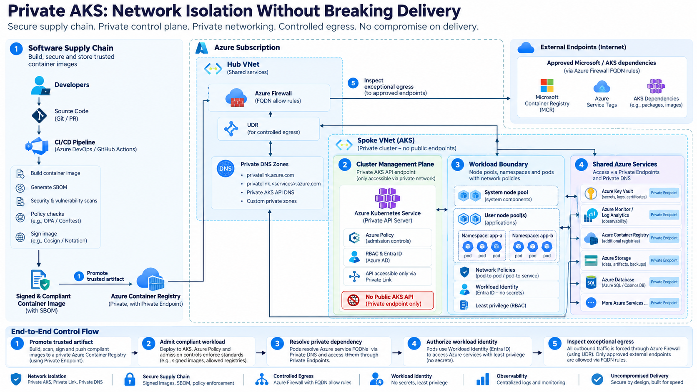

Reference architecture: private control plane, private dependencies, controlled egress, and observable delivery flow.

Diagram source: curated architecture board for this article.
Executive Context
Enterprise platform teams manage a persistent tension: strict network isolation to protect critical workloads versus the need for high-velocity software delivery. In regulated environments, unrestricted internet egress from Kubernetes clusters often violates compliance mandates. However, overly restrictive network configurations can break cluster operations, image pulls, and telemetry flows, leading to operational instability. This architecture defines a private Azure Kubernetes Service (AKS) cluster that enforces network isolation without compromising platform reliability or engineering speed.
Constraints and Assumptions
The architecture assumes a multi-tenant platform serving multiple engineering teams across development, test, staging, and production environments. The platform must support:
- Private AKS clusters with no public API server exposure.
- Controlled egress for cluster management and workload dependencies.
- Private endpoints for shared Azure services (Key Vault, Container Registry, Monitor).
- Strict separation of duties between platform engineering, security, and application teams.
- Compliance with data residency and network isolation policies.
Key assumptions include the use of Azure Private Link for service connectivity, Azure Firewall for egress control, and a hub-and-spoke network topology. The platform operates in public Azure regions, excluding Azure Government or 21Vianet regions due to specific retirement announcements for Defender for Cloud in those environments.
Target Architecture
The target architecture leverages a private AKS cluster where the control plane API server is accessible only via a private endpoint within the customer's virtual network (VNet). This ensures that all traffic between the API server and node pools remains on the private network. The architecture includes:
- Private Cluster: The API server is assigned a private IP address from the RFC1918 range, accessible only within the VNet.
- Private Endpoints: Shared services such as Azure Container Registry (ACR), Key Vault, and Azure Monitor are accessed via private endpoints, eliminating public internet exposure.
- Controlled Egress: Outbound traffic is restricted to specific FQDNs and ports required for cluster health, updates, and telemetry.
- DNS Integration: Private DNS zones are linked to the cluster VNet to resolve private endpoints and API server FQDNs.
This design minimizes the attack surface by removing public endpoints and restricting outbound traffic to known, necessary destinations.
DevSecOps Control Model
DevSecOps is treated as an operating model spanning the entire lifecycle of the workload. Controls are implemented at each stage to ensure security and compliance:
- Source and Build: Code is scanned for vulnerabilities and secrets. Container images are built in a secure CI/CD pipeline with signed artifacts.
- Artifact Provenance: Images are stored in a private ACR with vulnerability scanning enabled. Only images with a valid signature and no critical vulnerabilities are admitted.
- Infrastructure as Code (IaC): Cluster and network resources are defined in IaC templates, reviewed, and approved before deployment.
- Release Authorization: Workloads are deployed to the cluster only after passing admission control policies and security checks.
- Runtime Posture: Network policies and pod security standards are enforced to limit lateral movement and privilege escalation.
- Observability: Telemetry is collected and monitored for anomalies. Alerts are triggered for suspicious activities.
- Audit Evidence: All actions are logged and audited for compliance reporting.
This model ensures that security is integrated into the development process, reducing the risk of vulnerabilities and compliance violations.
Key Architecture Decisions
Several key architecture decisions were made to balance security, performance, and operational complexity.
Decision 1: Use Private AKS Cluster with Private DNS Zone
Decision: Deploy the AKS cluster as a private cluster with a private DNS zone linked to the cluster VNet.
Why Chosen: This ensures that the API server is accessible only within the VNet, eliminating public exposure. The private DNS zone allows nodes to resolve the API server FQDN to its private IP address.
Alternative Rejected: Using a public API server with IP-based access restrictions. This was rejected because it exposes the API server to the public internet, increasing the attack surface.
Consequence: The cluster is fully isolated from the public internet. However, it requires careful DNS configuration to ensure that nodes can resolve the API server and private endpoints.
Decision 2: Control Egress via Azure Firewall with FQDN Rules
Decision: Use Azure Firewall to control outbound traffic from the cluster, allowing only specific FQDNs and ports.
Why Chosen: Azure Firewall supports FQDN-based filtering, which is essential for AKS clusters that rely on dynamic IP addresses for many services. This allows for precise control over outbound traffic.
Alternative Rejected: Using Network Security Groups (NSGs) with IP-based rules. This was rejected because AKS dependencies often use dynamic IP addresses, making IP-based rules difficult to maintain.
Consequence: Egress traffic is strictly controlled, reducing the risk of data exfiltration. However, it requires ongoing maintenance of firewall rules to accommodate new dependencies.
Decision 3: Use Private ACR for Image Pulls
Decision: Configure the cluster to pull images from a private Azure Container Registry (ACR) instance connected via a private endpoint.
Why Chosen: This eliminates the need for the cluster to access the public Microsoft Artifact Registry (MAR) for system images. The private ACR can pull images from MAR and serve them via a private endpoint, keeping traffic within the VNet.
Alternative Rejected: Allowing direct egress to MAR. This was rejected because it requires opening outbound access to public endpoints, which contradicts the goal of network isolation.
Consequence: Image pulls are fully isolated from the public internet. However, it requires managing the private ACR and ensuring that it is synchronized with MAR.
Implementation Blueprint
The implementation involves several steps to configure the private AKS cluster, network, and services.
1. Network Configuration
- Create a hub VNet with a subnet for Azure Firewall and a spoke VNet for the AKS cluster.
- Configure route tables to direct outbound traffic from the AKS subnet to the Azure Firewall.
- Set up private DNS zones for the AKS cluster and shared services.
2. AKS Cluster Deployment
- Deploy the AKS cluster as a private cluster, specifying the private DNS zone and disabling the public FQDN.
- Configure node pools with the appropriate OS SKU (Azure Linux 3) and Kubernetes version.
- Enable add-ons such as Azure Policy and Container Insights.
3. Private Endpoints
- Create private endpoints for ACR, Key Vault, and Azure Monitor in the cluster VNet.
- Link the private DNS zones to the cluster VNet to resolve the private endpoints.
4. Egress Control
- Configure Azure Firewall with FQDN rules to allow outbound traffic to required AKS dependencies.
- Test the firewall rules to ensure that cluster operations are not blocked.
Operational Evidence and SLOs
Operational health is monitored through several key indicators:
- Cluster Health: The status of the API server and node pools is monitored via Azure Monitor. Alerts are triggered for any unhealthy nodes.
- Egress Latency: The latency of outbound traffic to required FQDNs is monitored to ensure that firewall rules do not introduce significant delays.
- DNS Resolution: The success rate of DNS queries for private endpoints and the API server is monitored.
- Image Pull Success: The success rate of image pulls from the private ACR is monitored.
Service Level Objectives (SLOs) are defined for each of these indicators to ensure that the platform meets the required reliability standards.
Failure Modes and Trade-offs
Several failure modes and trade-offs must be considered:
- DNS Misconfiguration: If the private DNS zone is not correctly linked to the cluster VNet, nodes may fail to resolve the API server FQDN. This can be mitigated by testing DNS resolution during deployment.
- Firewall Rule Exhaustion: If too many FQDN rules are added to the Azure Firewall, it may impact performance. This can be mitigated by regularly reviewing and optimizing firewall rules.
- Private ACR Synchronization: If the private ACR fails to synchronize with MAR, system images may become outdated. This can be mitigated by monitoring the synchronization status and setting up alerts.
- Operational Complexity: Managing private endpoints, DNS zones, and firewall rules adds operational complexity. This can be mitigated by automating the configuration and management of these resources using IaC.
Adoption Roadmap
The adoption of this architecture can be phased to minimize risk:
- Phase 1: Assessment and Planning: Assess the current network and security posture. Define the requirements for private endpoints and egress control.
- Phase 2: Pilot Deployment: Deploy a pilot private AKS cluster in a non-production environment. Test the configuration and validate that cluster operations are not impacted.
- Phase 3: Production Deployment: Deploy the private AKS cluster in production. Migrate workloads gradually, monitoring for any issues.
- Phase 4: Optimization: Optimize the configuration based on operational experience. Fine-tune firewall rules and DNS settings.
Conclusion
Architecting a private AKS cluster with controlled egress and private endpoints is a complex but necessary task for enterprise platforms. By carefully balancing security, performance, and operational complexity, platform teams can deliver a secure and reliable environment for engineering teams. The key is to implement robust DevSecOps controls, monitor operational health, and continuously optimize the configuration based on feedback and experience.
For more details on creating private AKS clusters, see Create a Private Azure Kubernetes Service (AKS) Cluster. For information on controlling egress traffic, see Outbound Network and FQDN Rules for Azure Kubernetes Service (AKS) Clusters. For an overview of private endpoints, see What is a private endpoint?.